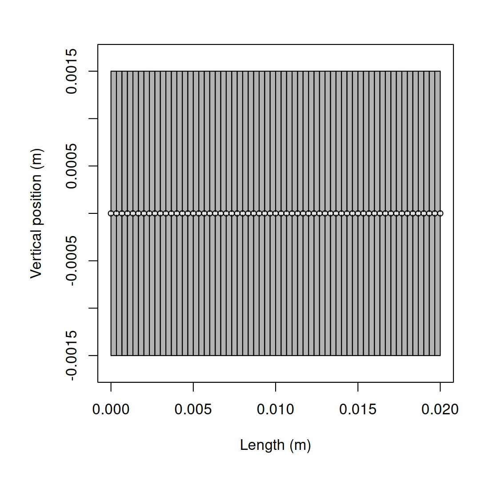
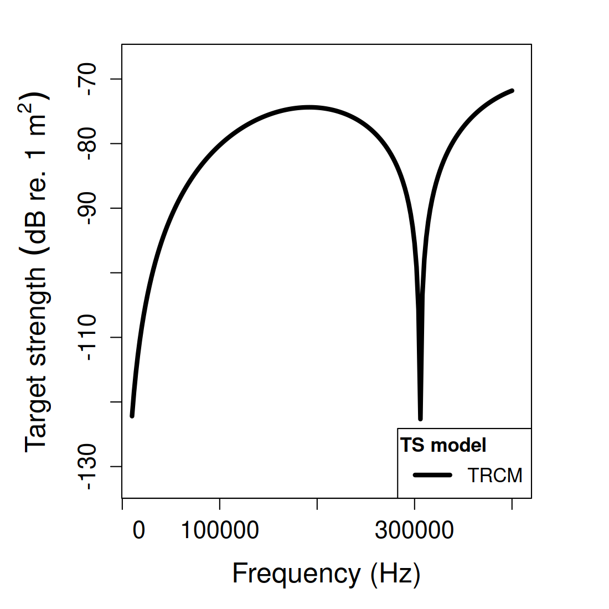
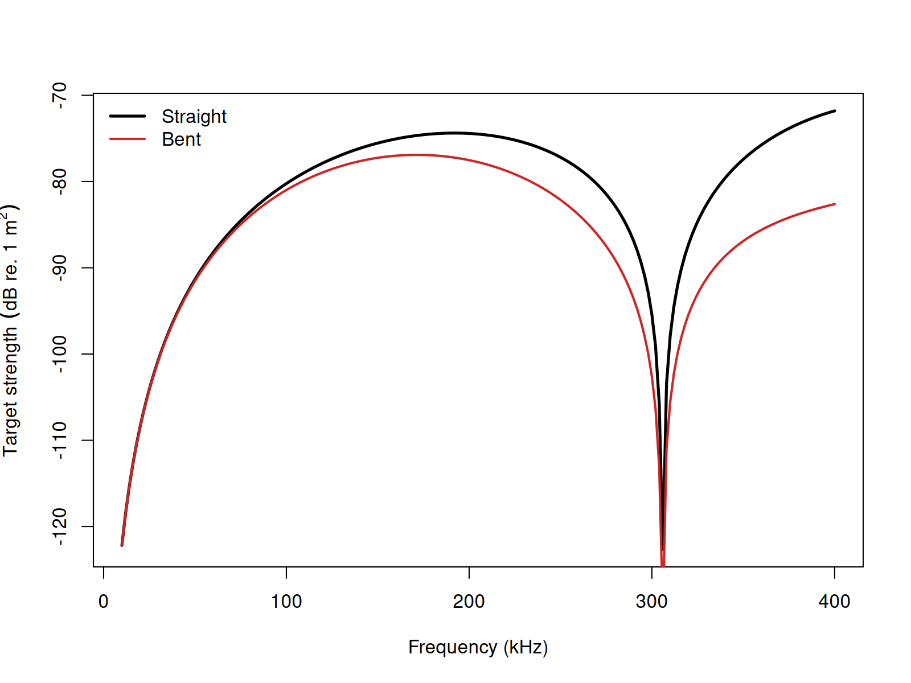

acousticTS implementation
These pages come from the high-frequency elongated-body literature and later fish and zooplankton applications (Stanton et al. 1993, 1998; Stanton, Chu, and Wiebe 1998).
The acousticTS package uses object-based scatterers so the same
implementation pattern carries across models: create a scatterer, run
target_strength(), inspect the stored model output, and
then compare a small set of physically important inputs. For TRCM, the
required object class is FLS with a cylindrical shape and
fluid-like material properties.
TRCM should be read as a fast high-frequency interpretation tool, not as a general-purpose cylinder solver. The implementation assumes that the cross-sectional scattering is well summarized by the two retained rays described in the theory vignette, and it uses the body axis only to impose finite-length directivity and, when present, curvature-driven coherence loss. That means the most important implementation decisions are geometric and interpretive: whether the organism is locally cylindrical, whether the fluid-like boundary assumption is defensible, and whether the frequency range is high enough that a two-ray asymptotic model is credible.
TRCM is a high-frequency asymptotic model. It is most useful when the target is well approximated by a locally cylindrical weakly scattering body and the scientific question is about broad interference/directivity structure rather than exact modal behavior.
Cylinder object generation
library(acousticTS)
straight_cylinder_shape <- cylinder(
length_body = 20e-3,
radius_body = 1.5e-3,
n_segments = 60
)
straight_cylinder <- fls_generate(
shape = straight_cylinder_shape,
density_body = 1045,
sound_speed_body = 1520,
theta_body = pi / 2
)
straight_cylinder## FLS-object
## Fluid-like scatterer
## ID:UID
## Body dimensions:
## Length:0.02 m(n = 60 cylinders)
## Mean radius:0.0015 m
## Max radius:0.0015 m
## Shape parameters:
## Defined shape:Cylinder
## L/a ratio:13.3
## Taper order:N/A
## Material properties:
## Density: 1045 kg m^-3 | Sound speed: 1520 m s^-1
## Body orientation (relative to transducer face/axis):1.571 radiansThe basic TRCM target is therefore simple in appearance but still physically specific. The object declares a fluid-like elongated body, fixes the local cross-sectional radius that controls the two-ray interference term, and sets the broadside orientation that makes the model easiest to interpret. If the target is not well approximated by a locally cylindrical fluid body, it is better to change models than to force TRCM to explain spectral structure it was not built to represent.
Calculating a TS-frequency spectrum
frequency <- seq(10e3, 300e3, by = 10e3)
straight_cylinder <- target_strength(
object = straight_cylinder,
frequency = frequency,
model = "trcm"
)At this stage the model has fixed the fluid contrasts, the representative cylinder radius, the body orientation, and the high-frequency two-ray interference structure. The returned spectrum should therefore be read as the backscatter implied by those assumptions, not as a generic fluid-cylinder result valid outside the TRCM regime.
Extracting model results
Model results can be extracted either visually or directly through
extract().
Plotting results


These plots should be used as a first consistency check. The shape plot confirms that the body really is the simple cylindrical target the TRCM expects, while the model plot shows whether the interference oscillations and overall level look physically plausible for the chosen radius, contrasts, and frequency range.
Accessing results
## frequency ka f_bs sigma_bs TS
## 1 10000 0.06283185 -6.018749e-07-4.910058e-07i 6.033401e-13 -122.19438
## 2 20000 0.12566371 -3.148111e-06-2.137160e-06i 1.447806e-11 -108.39290
## 3 30000 0.18849556 -8.023255e-06-4.699936e-06i 8.646202e-11 -100.63175
## 4 40000 0.25132741 -1.522710e-05-7.857108e-06i 2.935988e-10 -95.32246
## 5 50000 0.31415927 -2.459290e-05-1.134069e-05i 7.334221e-10 -91.34646
## 6 60000 0.37699112 -3.586530e-05-1.494154e-05i 1.509570e-09 -88.21147The extracted result contains the scattering amplitude
f_bs, the backscattering cross section
sigma_bs, and target strength TS. In TRCM
those quantities are especially worth checking together because an
apparently minor change in phase can move the model between constructive
and destructive interference. A smooth change in geometry can therefore
produce a large local change in TS, even when the
underlying contrasts have barely changed.
Comparison workflows
Straight versus bent cylinders
Curvature is one of the main practical controls in the TRCM workflow, so it is useful to compare a straight cylinder with a bent one that keeps the same length and local radius. That comparison is physically informative because the bent-body correction does not introduce a new reflection law. Instead, it changes the equivalent coherent length of the body axis. A straight-versus-bent comparison therefore isolates how much of the observed spectral structure is being supported by long-range axial coherence.

When stationary_phase = TRUE, the bent-cylinder
correction uses the asymptotic equivalent-length approximation rather
than numerically integrating the curvature-induced quadratic phase term
along the axis. That option is fastest and is usually appropriate when
the body is gently curved and acoustically large enough that the
stationary-phase picture is already the right one. When the inferred
bent-body effect seems to be carrying the whole answer, it is worth
rerunning with stationary_phase = FALSE to check whether
the simpler asymptotic branch is exaggerating or suppressing the
coherence loss.
For ray-based use cases, the next parameters to revisit are curvature and body orientation, since those control the interference and directivity structure more strongly than small changes in the fluid contrasts. If a TRCM spectrum changes radically under modest orientation or curvature adjustments, that sensitivity is part of the model interpretation rather than a post-processing nuisance.
Reference comparisons
TRCM spans two geometry regimes, so the implementation checks should
do the same. The straight-cylinder branch can still be compared against
the canonical weakly scattering cylinder reference curve. The
bent-cylinder branch is compared against the broadside bent-cylinder
construction implied by Stanton (1989, Eq. 25-26): the straight
finite-cylinder modal coefficient sum is retained, and curvature enters
through the exact Fresnel-type coherence integral along the bent axis.
In the table below, that bent reference uses the uniformly bent
weak-fluid cylinder setup discussed by Stanton (1989) and Stanton et
al. (1993): L/a = 10.5, rho_c/L = 1.5,
g = 1.0357, h = 1.0279, and ka
spanning 0.1 to 10.
| Geometry | Implementation branch | Reference family | Max abs. \Delta TS (dB) | Mean abs. \Delta TS (dB) | Elapsed (s) |
|---|---|---|---|---|---|
| Straight cylinder | Standard TRCM | Weakly scattering straight-cylinder benchmark | 23.76946 |
0.59807 |
0.00 |
| Bent cylinder | Fresnel-integral branch
(stationary_phase = FALSE) |
FCMS-derived bent-cylinder reference from Stanton (1989, Eq. 25-26) | 10.39341 |
0.73244 |
0.05 |
| Bent cylinder | Stationary-phase branch
(stationary_phase = TRUE) |
FCMS-derived bent-cylinder reference from Stanton (1989, Eq. 25-26) | 12.10080 |
1.41033 |
0.00 |
This split separates the approximation structure cleanly. The straight-cylinder row checks the ordinary two-ray reduction against the canonical constant-radius cylinder case. The two bent-cylinder rows then test the curvature bookkeeping separately: the full Fresnel-integral branch and the asymptotic stationary-phase shortcut are each evaluated against the same FCMS-derived bent-cylinder reference problem from Stanton’s Eq. 25-26 construction.
The stationary-phase shortcut is therefore judged against the bent-cylinder reference it is meant to approximate. Its remaining error should be read as the cost of using an asymptotic bent-body replacement for the full curvature integral, not as evidence that curvature itself is being mishandled.